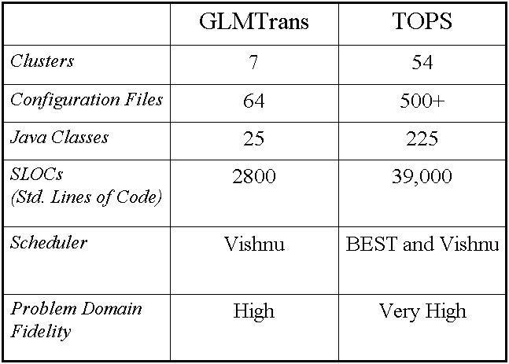
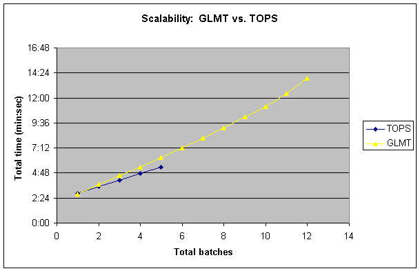
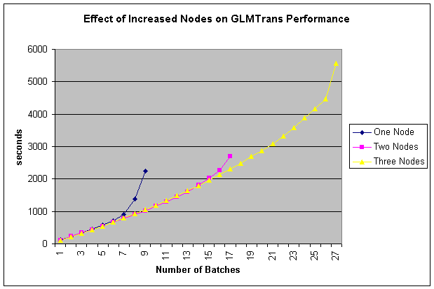

GLMTrans Scalability and Performance
A. GLMTrans vs. TOPS: an Overview

-
GLMTrans is a lightweight, highly scalable alternative to
TOPS
-
Easy to manage and configure
-
Slightly lower problem domain fidelity than TOPS
B. GLMTrans vs. TOPS Performance

-
Comparable performance scalability between GLMTrans and TOPS
-
Superior memory scalability for GLMTrans by roughly a factor
of 3 (total tasks handleable)
C. GLMTrans Scalability with Distribution

-
Society can process 8 batches (15,000 tasks) per 500M RAM
machine
-
Performance is linear with number of tasks until memory barrier
-
Distribution significantly enhances the scope of problems
that can be handled by GLMTrans